install.packages("flextable")Guide to R 04: Descriptive statistics and graphs
R for Biomedical Science · Leeds Beckett University
NoteHow to use this guide
This guide is your reference for week 2, session 2. It covers how to summarise data with numbers (descriptive statistics), how to present those numbers in a table, and how to show data with graphs using ggplot2. The examples use the diabetes trial data you cleaned in session 1, so you can see what the cleaning was for; the workbook then asks you to describe a different dataset. Every piece of output on this page was produced by running the code when the page was built.
Packages and data
This session uses the tidyverse, janitor (from session 1) and one new package, flextable, for making tables you can put in a Word document. Install flextable once, in the Console:
library(tidyverse)
library(janitor)
library(flextable)The chunk below repeats the cleaning from session 1 in a single step, so that this guide works on its own. Click Show the cleaning code to see it; it should look familiar.
Show the cleaning code
dia <- read_csv("data/bootcamp_messy_diabetes.csv") |>
clean_names() |>
rename(
hba1c_0m = bl_hb_a1c,
hba1c_3m = hb_a1c_3_months,
weight_0m = weight_kg_bl,
weight_3m = weight3m,
weight_6m = wt_6_month
) |>
mutate(
group = factor(grp,
levels = c("UC", "ILP"),
labels = c("Usual care", "Intensive lifestyle")),
sex = case_when(
sex %in% c("F", "female") ~ "Female",
sex %in% c("M", "male") ~ "Male"
),
sex = factor(sex, levels = c("Female", "Male")),
smoker = case_when(
smoker_yn %in% c("Y", "Yes", "1") ~ "Yes",
smoker_yn %in% c("N", "No", "0") ~ "No"
),
smoker = factor(smoker, levels = c("No", "Yes")),
age_yrs = parse_number(age),
hba1c_0m = if_else(hba1c_0m %in% c(-99, 999), NA, hba1c_0m),
hba1c_3m = if_else(hba1c_3m %in% c(-99, 999), NA, hba1c_3m),
hba1c_6m = if_else(hba1c_6m %in% c(-99, 999), NA, hba1c_6m)
) |>
select(patient_id, group, sex, age_yrs, smoker,
starts_with("hba1c"), starts_with("weight"))
hba1c_long <- dia |>
select(patient_id, group, starts_with("hba1c")) |>
pivot_longer(
cols = starts_with("hba1c"),
names_to = "timepoint",
values_to = "hba1c"
) |>
mutate(timepoint = factor(timepoint,
levels = c("hba1c_0m", "hba1c_3m", "hba1c_6m"),
labels = c("Baseline", "3 months", "6 months")))That leaves two objects: dia, with one row per patient, and hba1c_long, with one row per patient per timepoint.
glimpse(dia)Rows: 240
Columns: 11
$ patient_id <chr> "PT001", "PT002", "PT003", "PT004", "PT005", "PT006", "PT00…
$ group <fct> Usual care, Intensive lifestyle, Usual care, Intensive life…
$ sex <fct> Female, Female, Female, Male, Female, Female, Female, Femal…
$ age_yrs <dbl> 59, 54, 75, 55, 49, 53, 67, 63, 38, 79, 66, 63, 64, 68, 53,…
$ smoker <fct> No, No, No, No, No, No, No, Yes, Yes, No, No, Yes, Yes, No,…
$ hba1c_0m <dbl> 7.5, 8.5, 8.4, 8.9, 8.8, 8.9, 7.7, 8.2, 8.0, 8.3, NA, 8.2, …
$ hba1c_3m <dbl> 7.0, 7.2, 8.0, 7.7, 8.0, 8.5, 7.2, 7.2, 7.2, 8.2, 8.0, 7.5,…
$ hba1c_6m <dbl> 7.3, 7.0, 7.3, 7.4, 7.7, 8.5, 6.7, 6.9, 6.6, 8.1, 7.3, 7.4,…
$ weight_0m <dbl> 80.9, 77.5, 91.8, 124.6, 86.3, 91.6, 68.9, 106.3, 53.7, 110…
$ weight_3m <dbl> 81.0, 72.9, 93.0, 122.6, 87.3, 92.2, 69.8, 106.9, 51.3, 110…
$ weight_6m <dbl> 80.2, 70.2, 93.7, 120.9, 88.8, 93.5, 66.2, 102.4, 49.6, 112…Descriptive statistics
Descriptive statistics summarise a set of values with a few numbers. They don’t test anything; they describe what you have, and they are the first thing a reader of any study wants to know. For a numeric variable, a good description covers three things:
- centre: a typical value (the mean or the median);
- spread: how much the values vary (the standard deviation, or the interquartile range); and
- shape: whether the values are symmetric around the centre or trail off to one side (skewed), which you see best in a graph.
For a categorical variable, the description is the number and percentage in each category.
A quick overview with summary()
summary() gives the minimum, quartiles, median, mean and maximum of every numeric column, the counts for every factor, and the number of missing values (NA's). It’s the quickest first look:
summary(dia) patient_id group sex age_yrs
Length :240 Usual care :124 Female:124 Min. :29.00
N.unique :240 Intensive lifestyle:116 Male :116 1st Qu.:50.00
N.blank : 0 Median :58.00
Min.nchar: 5 Mean :57.88
Max.nchar: 5 3rd Qu.:64.00
Max. :85.00
smoker hba1c_0m hba1c_3m hba1c_6m weight_0m
No :158 Min. : 6.20 Min. : 5.400 Min. : 4.300 Min. : 52.00
Yes: 82 1st Qu.: 7.80 1st Qu.: 7.000 1st Qu.: 6.400 1st Qu.: 81.05
Median : 8.40 Median : 7.700 Median : 7.300 Median : 90.40
Mean : 8.36 Mean : 7.672 Mean : 7.226 Mean : 89.68
3rd Qu.: 8.90 3rd Qu.: 8.225 3rd Qu.: 8.000 3rd Qu.: 97.15
Max. :11.10 Max. :10.400 Max. :10.400 Max. :124.60
NAs :8 NAs :8 NAs :9
weight_3m weight_6m
Min. : 51.30 Min. : 49.60
1st Qu.: 79.20 1st Qu.: 77.85
Median : 89.35 Median : 87.70
Mean : 88.23 Mean : 87.10
3rd Qu.: 96.83 3rd Qu.: 95.20
Max. :122.60 Max. :120.90
Summary statistics for one variable
For the numbers you’ll actually report, summarise() lets you choose exactly which statistics to calculate and what to call them:
dia |>
summarise(
n = sum(!is.na(hba1c_0m)),
mean = mean(hba1c_0m, na.rm = TRUE),
sd = sd(hba1c_0m, na.rm = TRUE),
median = median(hba1c_0m, na.rm = TRUE),
q1 = quantile(hba1c_0m, 0.25, na.rm = TRUE),
q3 = quantile(hba1c_0m, 0.75, na.rm = TRUE),
iqr = IQR(hba1c_0m, na.rm = TRUE),
min = min(hba1c_0m, na.rm = TRUE),
max = max(hba1c_0m, na.rm = TRUE)
)# A tibble: 1 × 9
n mean sd median q1 q3 iqr min max
<int> <dbl> <dbl> <dbl> <dbl> <dbl> <dbl> <dbl> <dbl>
1 232 8.36 0.862 8.4 7.8 8.9 1.10 6.2 11.1| Code | What it calculates |
|---|---|
n = sum(!is.na(hba1c_0m)) |
The number of patients with a result. !is.na() is TRUE for every value that isn’t missing, and sum() counts the TRUEs. |
mean = mean(...) |
The mean: add up the values and divide by how many there are. |
sd = sd(...) |
The standard deviation: roughly, the typical distance of a value from the mean. In data that are roughly normally distributed, about two-thirds of values lie within one SD of the mean, and about 95% within two. |
median = median(...) |
The median: the middle value when they are sorted. Half the values are below it and half above. |
q1, q3 = quantile(..., 0.25), quantile(..., 0.75) |
The lower and upper quartiles: a quarter of the values lie below q1, and a quarter above q3. |
iqr = IQR(...) |
The interquartile range, q3 - q1: the range covered by the middle half of the values. |
min, max |
The smallest and largest values. |
na.rm = TRUE |
In every function: ignore the missing values. Without it, any NA makes the answer NA. |
The words on the left of each = (n, mean, sd and so on) are just names for the columns of the result; you can call them whatever you like.
To get a single number rather than a table, you can also apply the function directly to one column, picked out with $:
mean(dia$hba1c_0m, na.rm = TRUE)[1] 8.359914Mean or median?
The mean uses every value, so a few extreme values pull it towards them; the median only cares about the middle, so it hardly moves. When a variable is roughly symmetric, the two are close, and the mean and SD are the usual summary. When it is skewed, or has extreme values, they come apart, and the median and IQR describe a typical patient better. Baseline HbA1c is fairly symmetric (mean 8.36%, median 8.4%), so mean and SD are a fair summary. Biomarkers such as CRP, which are usually low but occasionally very high, are a classic case for the median and IQR; you’ll meet one in the workbook.
TipReport how many values each number is based on
Because na.rm = TRUE quietly drops missing values, always report n alongside a mean or median. Here, the baseline HbA1c summary is based on 232 of the 240 patients.
Summaries by group
Most studies compare groups. Put group_by() before summarise() and you get one row per group:
dia |>
group_by(group) |>
summarise(
n = sum(!is.na(hba1c_0m)),
mean = mean(hba1c_0m, na.rm = TRUE),
sd = sd(hba1c_0m, na.rm = TRUE),
se = sd / sqrt(n),
median = median(hba1c_0m, na.rm = TRUE),
iqr = IQR(hba1c_0m, na.rm = TRUE)
)# A tibble: 2 × 7
group n mean sd se median iqr
<fct> <int> <dbl> <dbl> <dbl> <dbl> <dbl>
1 Usual care 120 8.44 0.870 0.0794 8.45 1.1
2 Intensive lifestyle 112 8.27 0.848 0.0801 8.2 1.20| Code | What it does |
|---|---|
group_by(group) |
Splits the patients into the two treatment groups. Everything in summarise() is then calculated separately for each. |
se = sd / sqrt(n) |
The standard error of the mean: the SD divided by the square root of the number of values. Notice it uses the sd and n columns created on the lines above it, which summarise() allows. |
The standard deviation and the standard error answer different questions, and they are often confused:
- the SD describes the patients: how much individual HbA1c values vary around the mean;
- the SE describes the mean: how precisely it has been estimated. If you repeated the study with new patients, the means would vary from study to study by about one SE. Because it is divided by √n, the SE gets smaller as the sample gets bigger, even though the patients don’t become any less variable.
Use the SD when you’re describing the sample, and the SE (or, better, a confidence interval, which you’ll meet in week 4) when you’re showing how precise a mean is.
WarningCount the values you used, not the rows
You’ll often see n() used to count each group. n() counts rows, including rows where the value is missing. For a standard error, you need the number of values the SD was actually calculated from, so use sum(!is.na(column)). With no missing values the two are the same; here they aren’t (120 of 124 usual-care patients have a baseline result).
Categorical variables: counts and percentages
For a categorical variable, count() gives the number in each category, and mutate() can turn the counts into percentages:
dia |>
count(smoker) |>
mutate(percent = 100 * n / sum(n))# A tibble: 2 × 3
smoker n percent
<fct> <int> <dbl>
1 No 158 65.8
2 Yes 82 34.2sum(n) is the total of the n column (240), so each count is divided by the total and multiplied by 100.
With two variables, you usually want percentages within each group: “what percentage of each group smokes?”, rather than “what percentage of all patients are smokers in usual care?”. Group before calculating the percentage:
dia |>
count(group, smoker) |>
group_by(group) |>
mutate(percent = 100 * n / sum(n)) |>
ungroup()# A tibble: 4 × 4
group smoker n percent
<fct> <fct> <int> <dbl>
1 Usual care No 83 66.9
2 Usual care Yes 41 33.1
3 Intensive lifestyle No 75 64.7
4 Intensive lifestyle Yes 41 35.3Within each group, sum(n) is now that group’s total, so the two percentages for each group add up to 100.
A table for a report
Console output isn’t suitable for a report. A table in a report should have readable column headings, a sensible number of decimal places, and only the information the reader needs. Build the numbers first, check them, and only then format them. Here is a typical “Table 1”, describing each group at baseline:
table1 <- dia |>
group_by(group) |>
summarise(
n = n(),
age = mean(age_yrs),
female = 100 * mean(sex == "Female"),
smokers = 100 * mean(smoker == "Yes"),
hba1c = mean(hba1c_0m, na.rm = TRUE),
weight = mean(weight_0m)
)
table1# A tibble: 2 × 7
group n age female smokers hba1c weight
<fct> <int> <dbl> <dbl> <dbl> <dbl> <dbl>
1 Usual care 124 58.2 57.3 33.1 8.44 89.3
2 Intensive lifestyle 116 57.5 45.7 35.3 8.27 90.0mean(sex == "Female") is a useful trick: sex == "Female" is TRUE or FALSE for each patient, and the mean of TRUEs and FALSEs is the proportion that are TRUE. Multiplying by 100 gives a percentage. (n() is fine here because every patient counts, whatever they’re missing.)
The flextable package turns a tibble into a formatted table:
table1 |>
flextable() |>
set_header_labels(
group = "Group",
n = "n",
age = "Mean age (years)",
female = "Female (%)",
smokers = "Smokers (%)",
hba1c = "Mean HbA1c (%)",
weight = "Mean weight (kg)"
) |>
colformat_double(digits = 1) |>
autofit()Group | n | Mean age (years) | Female (%) | Smokers (%) | Mean HbA1c (%) | Mean weight (kg) |
|---|---|---|---|---|---|---|
Usual care | 124 | 58.2 | 57.3 | 33.1 | 8.4 | 89.3 |
Intensive lifestyle | 116 | 57.5 | 45.7 | 35.3 | 8.3 | 90.0 |
| Code | What it does |
|---|---|
flextable() |
Turns the tibble into a flextable object. |
set_header_labels(...) |
Replaces each column name with a readable heading: column name on the left of =, heading on the right. |
colformat_double(digits = 1) |
Shows every decimal number to one decimal place. (Only the display changes; the numbers underneath are unchanged.) |
autofit() |
Sizes the columns to fit their contents. |
To save the table as a Word document, store it with <-, then use save_as_docx():
table1_ft <- table1 |>
flextable() |>
set_header_labels(group = "Group", age = "Mean age (years)") |>
colformat_double(digits = 1) |>
autofit()
save_as_docx(table1_ft, path = "table1.docx")The file is saved in your project folder. Open it in Word and copy the table into your report.
Checking for outliers
An outlier is a value that is unusually far from the rest. Outliers can be genuine (one patient really does have a very high CRP), or they can be errors (a typing slip, or a missing-value code you haven’t found yet). The usual rule of thumb, and the one boxplots use, is that a value is a potential outlier if it is more than 1.5 × IQR above the upper quartile or below the lower quartile. You can find those values with filter():
dia |>
filter(hba1c_0m > quantile(hba1c_0m, 0.75, na.rm = TRUE) + 1.5 * IQR(hba1c_0m, na.rm = TRUE) |
hba1c_0m < quantile(hba1c_0m, 0.25, na.rm = TRUE) - 1.5 * IQR(hba1c_0m, na.rm = TRUE)) |>
select(patient_id, group, hba1c_0m)# A tibble: 3 × 3
patient_id group hba1c_0m
<chr> <fct> <dbl>
1 PT118 Usual care 11.1
2 PT119 Intensive lifestyle 10.7
3 PT144 Usual care 10.7Three patients have baseline HbA1c values above the cut-off (here, 10.55%). An HbA1c of 11% is high but entirely plausible in someone with poorly controlled diabetes, so these are almost certainly real. Being an outlier is not a reason to delete a value. Check whether it is possible; if it is, keep it, and choose summaries (medians) and methods that aren’t thrown by it. If it is impossible, treat it as an error, set it to NA, and report what you did.
Graphs
Graphs show things that summary numbers hide: the shape of a distribution, outliers, overlap between groups, patterns over time. Plot your data before you summarise or test it.
Choosing the right graph
| Graph | Use it to show | Example question for the diabetes data |
|---|---|---|
| Histogram | The distribution of one continuous variable | What does the spread of baseline HbA1c look like? |
| Boxplot | The distribution of a continuous variable in several groups | How does HbA1c at 6 months differ between the groups? |
| Scatter plot | The relationship between two continuous variables | Do patients who lose more weight see bigger falls in HbA1c? |
| Bar chart | Counts of a categorical variable (or, with care, group means) | How many smokers are there in each group? |
| Line graph | Change over time | How does mean HbA1c change over the six months? |
How ggplot2 builds a graph
ggplot2 is the most widely used R package for graphs, and part of the tidyverse. It is based on the grammar of graphics, which breaks every graph into the same few parts:
- the data:
ggplot(dia, ...); - the aesthetic mappings,
aes(): which column goes on the x axis, which on the y, which controls colour or fill; - one or more geoms: the marks that represent the data (bars, boxes, points, lines); and
- everything else, added in layers with
+: labels (labs()), colour scales, themes and annotations.
Anything inside aes() is linked to a column, so it changes with the data: aes(colour = group) colours each point by its group. Anything outside aes() is a fixed setting: colour = "#753bbd" makes every point the same purple. Putting a fixed setting inside aes() by mistake (aes(colour = "purple")) gives a strange legend and the wrong colour, because ggplot treats the word “purple” as a category.
The ggplot2 website lists every geom, scale and theme, with examples.
Histograms
A histogram divides the range of a variable into bins and draws a bar for the number of values in each. It shows the shape of the distribution:
ggplot(dia, aes(x = hba1c_0m)) +
geom_histogram(binwidth = 0.25, fill = "#753bbd", colour = "white") +
labs(title = "Baseline HbA1c",
x = "HbA1c (%)",
y = "Number of patients") +
theme_minimal()Warning: Removed 8 rows containing non-finite outside the scale range
(`stat_bin()`).| Code | What it does |
|---|---|
ggplot(dia, aes(x = hba1c_0m)) |
Uses dia, with baseline HbA1c on the x axis. A histogram needs only an x; ggplot counts the y for you. |
geom_histogram(binwidth = 0.25, ...) |
Draws the histogram, with each bar covering 0.25 percentage points of HbA1c. |
fill = "#753bbd", colour = "white" |
Fixed settings, outside aes(): purple bars with a white outline, so neighbouring bars are easy to tell apart. |
labs(...) |
The title and axis labels. Always give the units. |
theme_minimal() |
A clean theme with a white background. |
ggplot warns that it has removed 8 rows: those are the patients with a missing result, which can’t be plotted. The warning is worth reading, because it tells you how many values the plot is based on.
The distribution is roughly symmetric, centred on about 8.4%, with three values trailing off to the right (the outliers found above). The bin width matters: too wide and the shape disappears into a few blocks, too narrow and it becomes spiky noise. Try a few values. To compare groups, facet_wrap() draws one panel per group, on the same axes:
ggplot(dia, aes(x = hba1c_6m)) +
geom_histogram(binwidth = 0.25, fill = "#753bbd", colour = "white") +
facet_wrap(~ group, ncol = 1) +
labs(title = "HbA1c at 6 months",
x = "HbA1c (%)",
y = "Number of patients") +
theme_minimal()Warning: Removed 9 rows containing non-finite outside the scale range
(`stat_bin()`).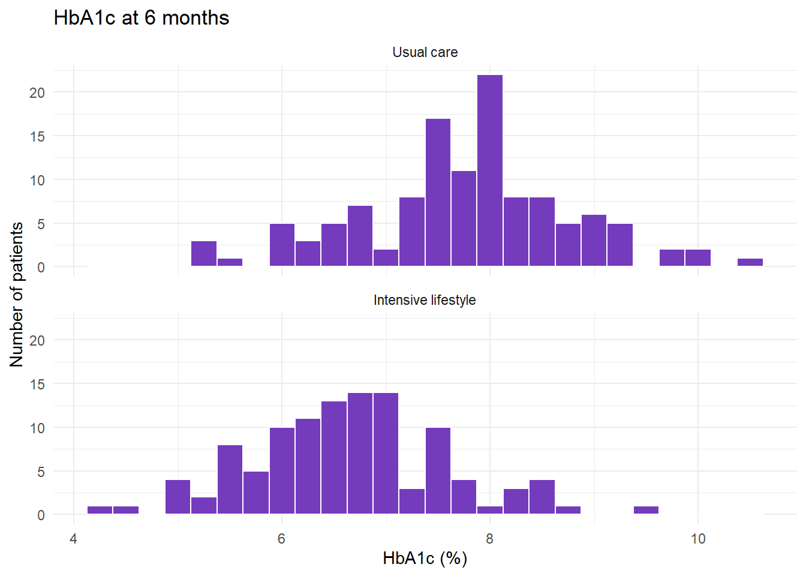
facet_wrap(~ group, ncol = 1) splits the plot by group and stacks the panels in one column (~ means “by”), so the two distributions line up on the same scale. The intensive lifestyle group’s distribution sits clearly to the left.
Boxplots
A boxplot summarises a distribution in five numbers: the line in the box is the median, the box runs from the lower to the upper quartile (so its height is the IQR), the whiskers reach the most extreme values within 1.5 × IQR of the box, and anything beyond that is drawn as a separate point (a potential outlier). Boxplots are ideal for comparing groups:
ggplot(dia, aes(x = group, y = hba1c_6m, fill = group)) +
geom_boxplot(alpha = 0.8) +
scale_fill_manual(values = c("Usual care" = "#b48fe0",
"Intensive lifestyle" = "#4b2479")) +
labs(title = "HbA1c at 6 months",
x = NULL,
y = "HbA1c (%)") +
theme_classic() +
theme(legend.position = "none")Warning: Removed 9 rows containing non-finite outside the scale range
(`stat_boxplot()`).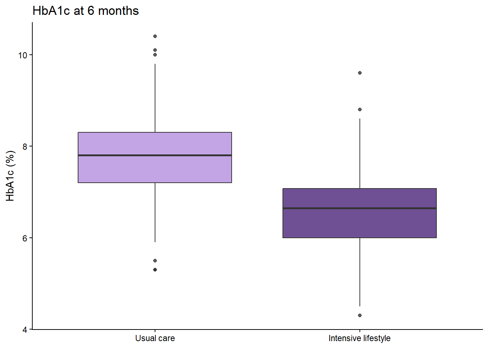
| Code | What it does |
|---|---|
aes(x = group, y = hba1c_6m, fill = group) |
One box per group on the x axis, HbA1c on the y axis, and each box filled according to its group. |
geom_boxplot(alpha = 0.8) |
Draws the boxes; alpha sets the transparency, from 0 (invisible) to 1 (solid). |
scale_fill_manual(values = ...) |
Chooses the fill colour for each group by name. The names must match the factor levels exactly, including capitals. |
x = NULL |
Removes the x-axis title, because the group names already say everything. |
theme_classic() |
A theme with axis lines and no grid. |
theme(legend.position = "none") |
Removes the legend, which would only repeat the x axis. |
A boxplot hides how many patients are in each group and what the individual values look like. Adding the points themselves, spread sideways a little so they don’t sit on top of each other, shows both:
ggplot(dia, aes(x = group, y = hba1c_6m, fill = group)) +
geom_boxplot(alpha = 0.5, outlier.shape = NA) +
geom_jitter(width = 0.15, alpha = 0.6, colour = "#4b2479") +
scale_fill_manual(values = c("Usual care" = "#b48fe0",
"Intensive lifestyle" = "#4b2479")) +
labs(title = "HbA1c at 6 months", x = NULL, y = "HbA1c (%)") +
theme_classic() +
theme(legend.position = "none")Warning: Removed 9 rows containing non-finite outside the scale range
(`stat_boxplot()`).Warning: Removed 9 rows containing missing values or values outside the scale range
(`geom_point()`).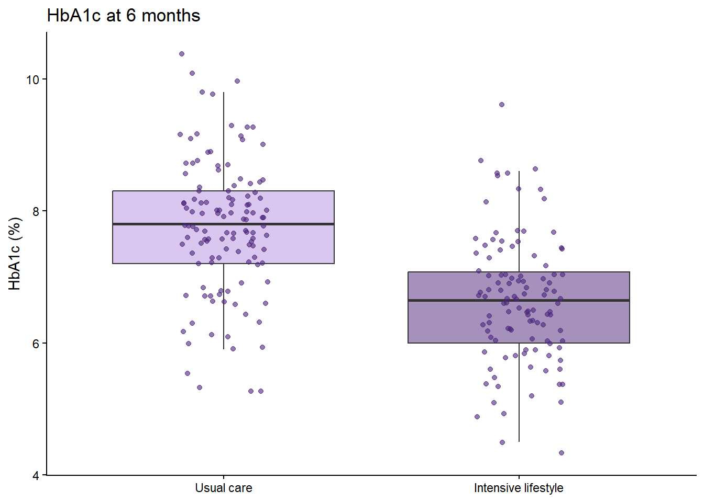
outlier.shape = NA stops the boxplot drawing its own outlier points, because the jittered points already include them. geom_jitter(width = 0.15) moves each point a small random distance left or right (never up or down, so the values aren’t changed).
Scatter plots
A scatter plot shows the relationship between two continuous variables, one point per patient. Here is each patient’s change in weight against their change in HbA1c over the six months, calculated with mutate() first:
dia <- dia |>
mutate(
weight_change = weight_6m - weight_0m,
hba1c_change = hba1c_6m - hba1c_0m
)
ggplot(dia, aes(x = weight_change, y = hba1c_change)) +
geom_point(alpha = 0.6, colour = "#753bbd") +
geom_smooth(method = "lm", se = FALSE, colour = "#4b2479") +
labs(title = "Change in weight and HbA1c over six months",
x = "Change in weight (kg)",
y = "Change in HbA1c (percentage points)") +
theme_minimal()`geom_smooth()` using formula = 'y ~ x'Warning: Removed 17 rows containing non-finite outside the scale range
(`stat_smooth()`).Warning: Removed 17 rows containing missing values or values outside the scale range
(`geom_point()`).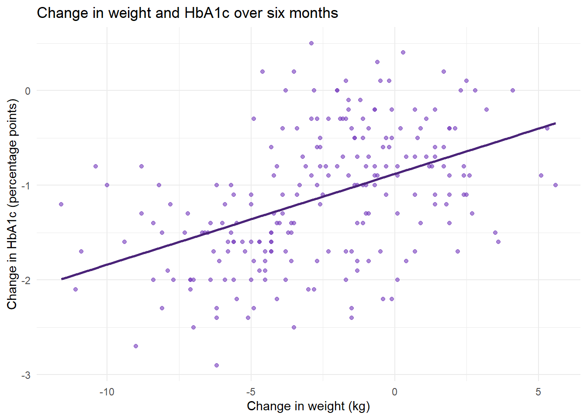
| Code | What it does |
|---|---|
weight_change = weight_6m - weight_0m |
A new column: each patient’s weight at 6 months minus their weight at baseline. Negative values mean weight was lost. |
geom_point(alpha = 0.6, ...) |
One point per patient, slightly transparent, so overlapping points show up darker. |
geom_smooth(method = "lm", se = FALSE) |
Adds the straight line that best fits the points (lm is short for linear model; you’ll meet it properly in week 5). se = FALSE hides the shaded band around the line. |
(The warning about removed rows refers to the 17 patients missing either HbA1c result, whose change can’t be calculated.) Overall, patients who lost more weight tended to have bigger falls in HbA1c. But look what happens when the two groups are coloured differently, with a line for each:
ggplot(dia, aes(x = weight_change, y = hba1c_change, colour = group)) +
geom_point(alpha = 0.6) +
geom_smooth(method = "lm", se = FALSE) +
scale_colour_manual(values = c("Usual care" = "#b48fe0",
"Intensive lifestyle" = "#4b2479")) +
labs(title = "Change in weight and HbA1c over six months",
x = "Change in weight (kg)",
y = "Change in HbA1c (percentage points)",
colour = "Group") +
theme_minimal()`geom_smooth()` using formula = 'y ~ x'Warning: Removed 17 rows containing non-finite outside the scale range
(`stat_smooth()`).Warning: Removed 17 rows containing missing values or values outside the scale range
(`geom_point()`).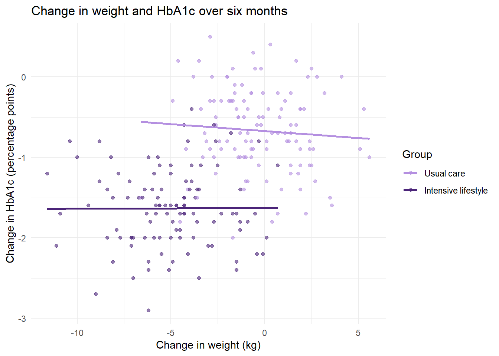
Within each group, the lines are almost flat: there is little sign that the patients who lost the most weight had the biggest falls in HbA1c. The overall trend in the first plot came almost entirely from the difference between the groups: the lifestyle group lost more weight and had bigger falls in HbA1c. A relationship across a whole sample can disappear, or even reverse, within its subgroups, which is why it is always worth colouring or splitting a scatter plot by the groups in your study.
Bar charts
Bars for counts
geom_bar() counts the rows in each category and draws a bar for each count. Use it for categorical variables:
ggplot(dia, aes(x = group, fill = smoker)) +
geom_bar(position = "dodge") +
scale_fill_manual(values = c("No" = "#b48fe0", "Yes" = "#4b2479")) +
labs(title = "Smoking status by group",
x = NULL, y = "Number of patients", fill = "Smoker") +
theme_light()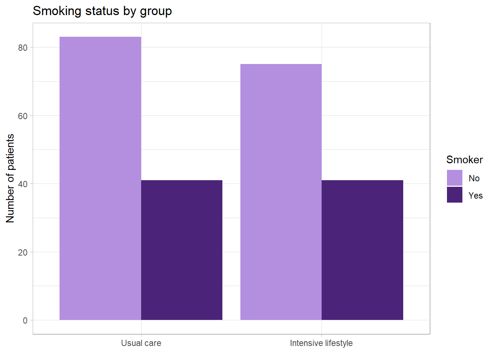
position = "dodge" puts the bars for each smoking status side by side; without it, they would be stacked on top of each other. Because the groups are different sizes, percentages (see above) are often fairer to compare than counts.
Bars for means, with error bars
Bar charts are also widely used to show group means, with error bars for the standard error. To draw one, calculate the summary first, then plot the summary with geom_col(), which draws bars at the heights you give it:
hba1c_6m_summary <- dia |>
group_by(group) |>
summarise(
n = sum(!is.na(hba1c_6m)),
mean = mean(hba1c_6m, na.rm = TRUE),
se = sd(hba1c_6m, na.rm = TRUE) / sqrt(n)
)
ggplot(hba1c_6m_summary, aes(x = group, y = mean, fill = group)) +
geom_col(width = 0.6) +
geom_errorbar(aes(ymin = mean - se, ymax = mean + se), width = 0.2) +
scale_fill_manual(values = c("Usual care" = "#b48fe0",
"Intensive lifestyle" = "#4b2479")) +
labs(title = "Mean HbA1c at 6 months",
x = NULL, y = "Mean HbA1c (%) ± SE") +
theme_minimal() +
theme(legend.position = "none")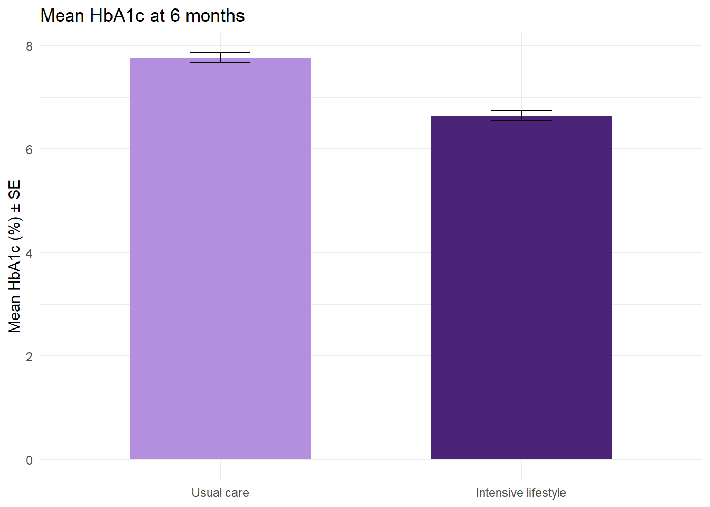
| Code | What it does |
|---|---|
geom_col(width = 0.6) |
Draws one bar per row of the summary, with its height taken from mean. |
geom_errorbar(aes(ymin = mean - se, ymax = mean + se), width = 0.2) |
Draws an error bar from one SE below the mean to one SE above it; width sets the width of the horizontal ends. |
y = "Mean HbA1c (%) ± SE" |
Always say what the error bars show: SD, SE and confidence intervals all look the same on a plot. |
WarningThink twice before using bars for means
Compare this chart with the boxplots above. The bar chart shows two numbers and two error bars; the boxplot shows the whole distribution, including the large overlap between the groups. Bars also start at zero, which squashes differences when, as with HbA1c, no patient’s value is anywhere near zero. Many journals now discourage bar charts of means for continuous data. Prefer a boxplot, or points with the mean marked, and keep bar charts for counts.
Line graphs
A line graph is the natural way to show change over time. It needs data in long format, with the time variable in one column. Here are the mean and standard error at each timepoint in each group, from hba1c_long:
hba1c_summary <- hba1c_long |>
group_by(group, timepoint) |>
summarise(
n = sum(!is.na(hba1c)),
mean = mean(hba1c, na.rm = TRUE),
se = sd(hba1c, na.rm = TRUE) / sqrt(n)
) |>
ungroup()`summarise()` has regrouped the output.
ℹ Summaries were computed grouped by group and timepoint.
ℹ Output is grouped by group.
ℹ Use `summarise(.groups = "drop_last")` to silence this message.
ℹ Use `summarise(.by = c(group, timepoint))` for per-operation grouping
(`?dplyr::dplyr_by`) instead.ggplot(hba1c_summary, aes(x = timepoint, y = mean, colour = group, group = group)) +
geom_line(linewidth = 1) +
geom_point(size = 2) +
geom_errorbar(aes(ymin = mean - se, ymax = mean + se), width = 0.1) +
scale_colour_manual(values = c("Usual care" = "#b48fe0",
"Intensive lifestyle" = "#4b2479")) +
labs(title = "Mean HbA1c over six months",
x = NULL, y = "Mean HbA1c (%) ± SE", colour = "Group") +
theme_bw()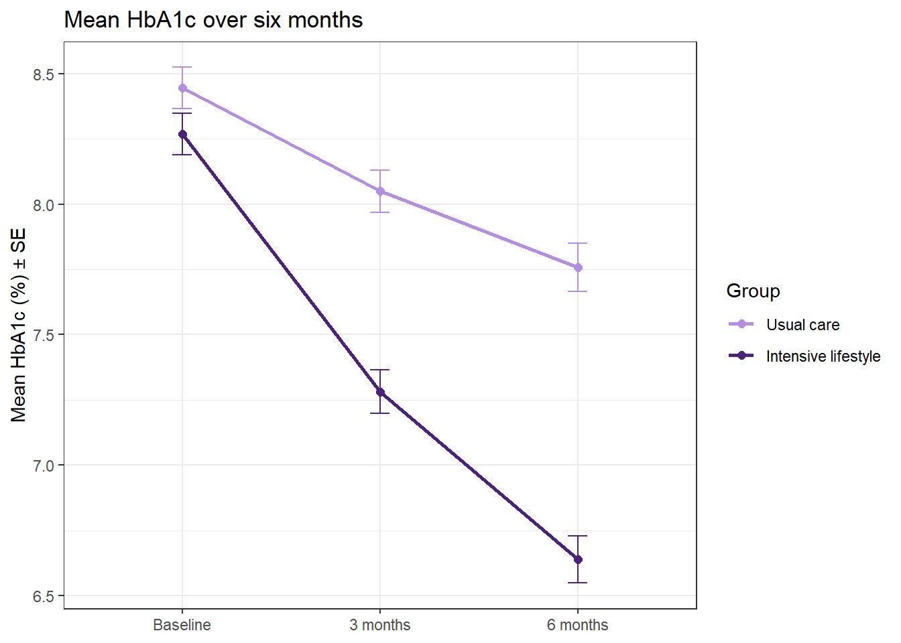
| Code | What it does |
|---|---|
group = group |
Tells ggplot which points to join into each line. With a factor on the x axis, ggplot can’t work this out for itself. |
geom_line(linewidth = 1) |
Joins the points. (In older code you’ll see size = 1 for lines; current versions of ggplot2 use linewidth.) |
geom_errorbar(...) |
Error bars, exactly as in the bar chart. |
theme_bw() |
A black-and-white theme with a light grid. |
The error bars are small because there are over 100 patients at each point; compare them with the spread of the individual values in the boxplots.
Colours and themes
Colours can be given by name (R knows over 600, from "black" to "mediumorchid") or, more precisely, by hex code: a # followed by six characters giving the amounts of red, green and blue. The purples used in this guide are:
| Colour | Hex code | Used for |
|---|---|---|
| Dark purple | #4b2479 |
Intensive lifestyle; lines and text |
| Purple | #753bbd |
Single-colour plots |
| Light purple | #b48fe0 |
Usual care |
Shades of one colour that differ a lot in lightness, like these, stay distinguishable when printed in black and white and for readers with colour-vision deficiencies, which red-and-green pairs don’t. Use scale_fill_manual() for anything drawn with fill (bars, boxes, histograms) and scale_colour_manual() for anything drawn with colour (points, lines).
A theme controls everything that isn’t data: background, grid lines, fonts. The built-in themes include theme_minimal(), theme_classic(), theme_bw() and theme_light(), and theme() changes individual elements. For example, theme(legend.position = "bottom") moves the legend, and theme(text = element_text(size = 14)) makes all the text bigger. Type ?theme in the Console for the full list.
Annotations
Annotations point the reader to what matters. Lines mark thresholds, text and arrows label features, and shaded areas mark ranges.
Reference lines
geom_hline() draws a horizontal line, and geom_vline() a vertical one. Here, the mean HbA1c plot with a line at 7% (53 mmol/mol), a commonly used treatment target, and a text label:
ggplot(hba1c_summary, aes(x = timepoint, y = mean, colour = group, group = group)) +
geom_hline(yintercept = 7, linetype = "dashed", colour = "grey40") +
geom_line(linewidth = 1) +
geom_point(size = 2) +
annotate("text", x = 0.6, y = 7.08, label = "7% treatment target",
hjust = 0, colour = "grey30") +
scale_colour_manual(values = c("Usual care" = "#b48fe0",
"Intensive lifestyle" = "#4b2479")) +
labs(title = "Mean HbA1c over six months",
x = NULL, y = "Mean HbA1c (%)", colour = "Group") +
theme_bw()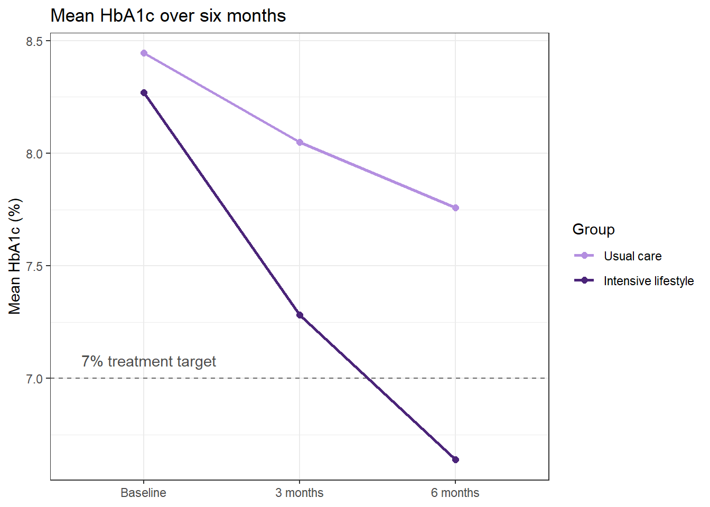
| Code | What it does |
|---|---|
geom_hline(yintercept = 7, linetype = "dashed", ...) |
A dashed horizontal line at y = 7. It comes first so the data are drawn on top of it. |
annotate("text", x = 0.6, y = 7.08, label = ..., hjust = 0) |
Writes the label at the position given. On a factor axis the categories sit at positions 1, 2, 3, …, so x = 0.6 is just left of “Baseline”. hjust = 0 lines up the start of the text with that position. With a factor on the x axis, put annotate() after the geoms that use the factor, or ggplot gets confused about the type of axis. |
Arrows and labels
annotate("segment") draws a line between two points; adding arrow = arrow() turns it into an arrow. Here, pointing out the three high baseline values:
ggplot(dia, aes(x = hba1c_0m)) +
geom_histogram(binwidth = 0.25, fill = "#753bbd", colour = "white") +
annotate("segment", x = 10.3, xend = 10.8, y = 14, yend = 4,
arrow = arrow(length = unit(0.15, "inches")), colour = "#4b2479") +
annotate("text", x = 10.3, y = 16, label = "Three unusually high values",
colour = "#4b2479", fontface = "bold") +
labs(title = "Baseline HbA1c", x = "HbA1c (%)", y = "Number of patients") +
theme_minimal()Warning: Removed 8 rows containing non-finite outside the scale range
(`stat_bin()`).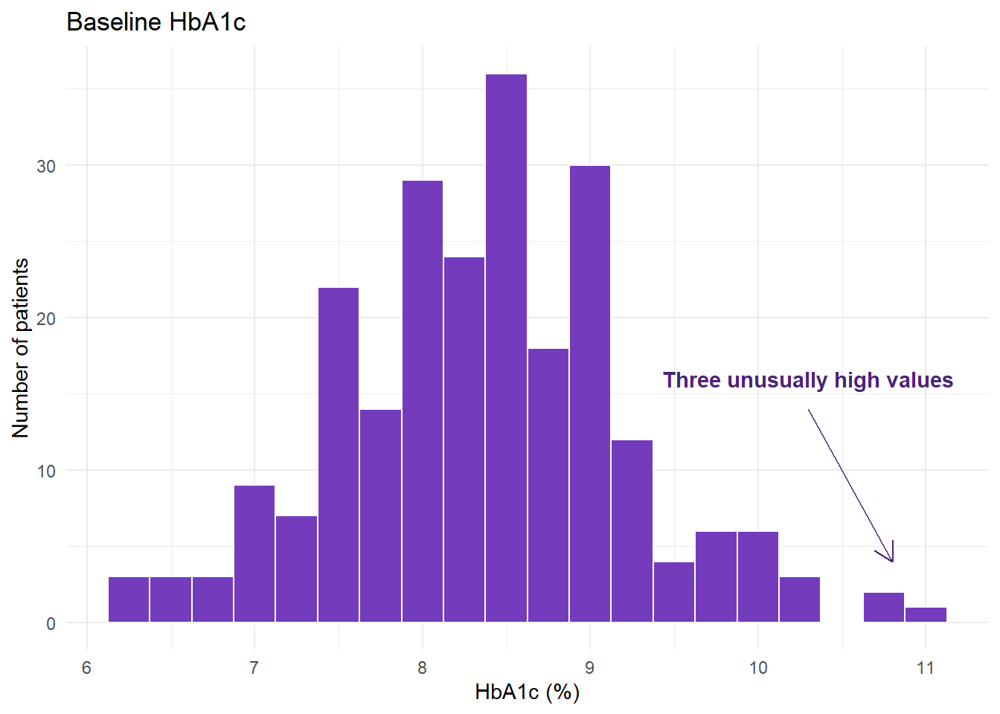
The arrow runs from (x, y) to (xend, yend), in the units of the axes. arrow(length = unit(0.15, "inches")) sets the size of the arrowhead. Expect to adjust the positions by trial and error.
Shaded areas
annotate("rect") draws a rectangle, from xmin to xmax and from ymin to ymax; -Inf and Inf stretch it to the edges of the plot. Here, shading the HbA1c values below the 7% target on the 6-month histograms. The rectangle comes before the histogram, so the bars are drawn on top of it, and it appears in both panels:
ggplot(dia, aes(x = hba1c_6m)) +
annotate("rect", xmin = -Inf, xmax = 7, ymin = -Inf, ymax = Inf,
fill = "#e4d8f4", alpha = 0.8) +
geom_histogram(binwidth = 0.25, fill = "#753bbd", colour = "white") +
facet_wrap(~ group, ncol = 1) +
labs(title = "HbA1c at 6 months",
subtitle = "Shaded area: below the 7% treatment target",
x = "HbA1c (%)", y = "Number of patients") +
theme_minimal()Warning: Removed 9 rows containing non-finite outside the scale range
(`stat_bin()`).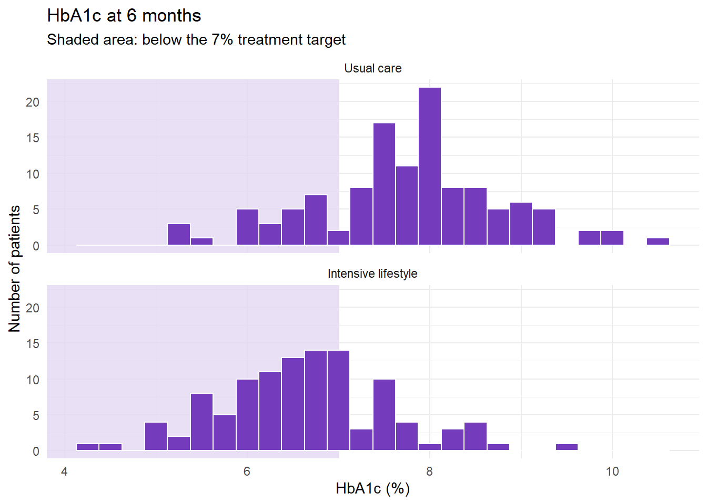
At 6 months, 74 of the 110 patients with a result in the intensive lifestyle group are below the target, compared with 26 of 121 in usual care.
Notep-values and significance stars
Plots in papers often have p-values or stars (*, **, ***) above the groups. A p-value comes from a statistical test, so we’ll add them in week 4, when you meet t-tests. Until then, describe, don’t test.
Saving graphs
Run ggsave() straight after the plot you want to save. The file type comes from the ending of the file name, and the path is relative to the project folder (create a figures folder in the Files pane first):
ggsave("figures/hba1c_over_time.png", width = 8, height = 5, dpi = 300) # an image file
ggsave("figures/hba1c_over_time.pdf", width = 8, height = 5) # a PDF, which stays sharp at any size| Code | What it does |
|---|---|
ggsave("figures/....png", ...) |
Saves the most recent plot. Change the file name for each plot, or the next one will overwrite it. |
width = 8, height = 5 |
The size in inches. Text sizes are fixed, so a smaller size makes the text look bigger. |
dpi = 300 |
The resolution of an image file, in dots per inch. 300 is the usual standard for print and publication. |
You can also copy a plot from the Plots pane (Export › Copy to Clipboard) and paste it into Word, but ggsave() gives you control over the size and resolution, and saves the same plot every time the code runs.
Summary
| Task | Code |
|---|---|
| Quick overview of every column | summary(data) |
| Chosen statistics for a column | summarise(n = sum(!is.na(x)), mean = mean(x, na.rm = TRUE), sd = sd(x, na.rm = TRUE), ...) |
| Median, quartiles, IQR | median(), quantile(x, 0.25), IQR() |
| The same, for each group | group_by(group) |> summarise(...) |
| Standard error | sd / sqrt(n), with n the number of non-missing values |
| Counts and percentages | count(x) |> mutate(percent = 100 * n / sum(n)) |
| Percentages within groups | count(group, x) |> group_by(group) |> mutate(percent = 100 * n / sum(n)) |
| A formatted table / save it to Word | flextable() |> set_header_labels() |> colformat_double() |> autofit() / save_as_docx() |
| Histogram / one panel per group | geom_histogram(binwidth = ...) / facet_wrap(~ group) |
| Boxplot, with the points | geom_boxplot() + geom_jitter(width = 0.15) |
| Scatter plot with a straight line | geom_point() + geom_smooth(method = "lm") |
| Bars for counts / for means | geom_bar() / geom_col() + geom_errorbar() |
| Line graph over time | geom_line() + geom_point(), with group = ... in aes() |
| Your own colours | scale_fill_manual() / scale_colour_manual() |
| Reference lines, text, arrows, shading | geom_hline(), geom_vline(), annotate("text" / "segment" / "rect") |
| Save a plot | ggsave("figures/name.png", width = , height = , dpi = 300) |